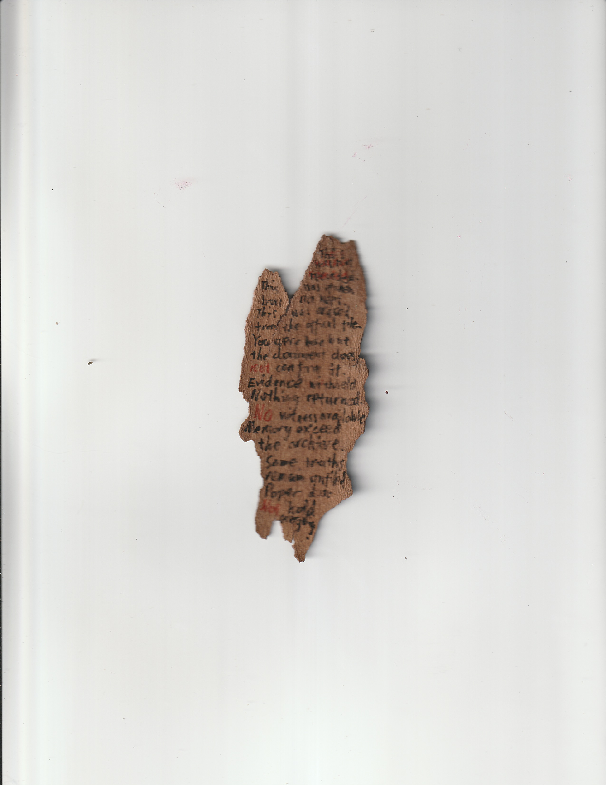
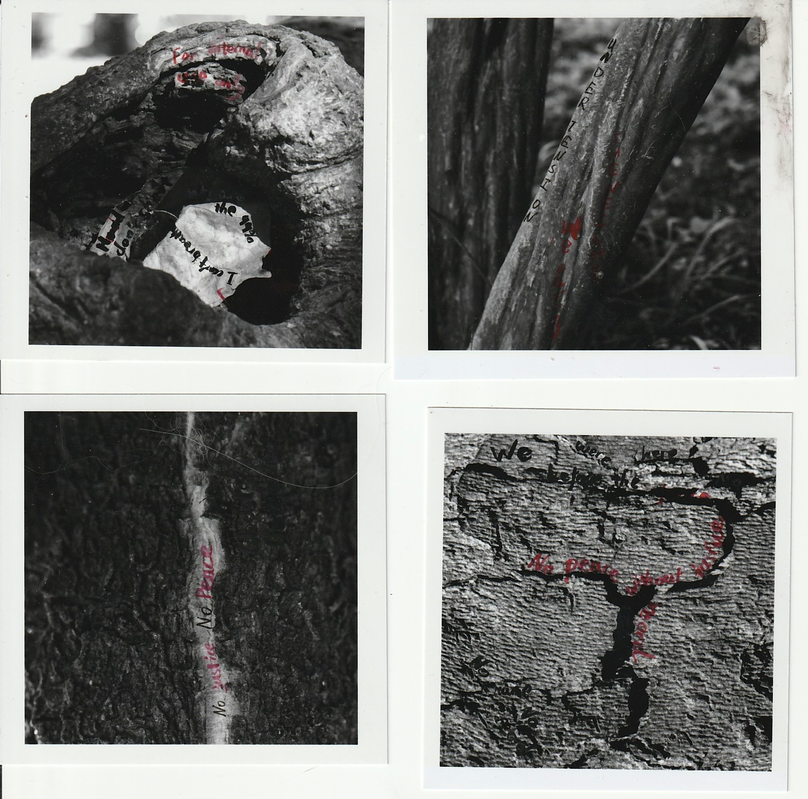
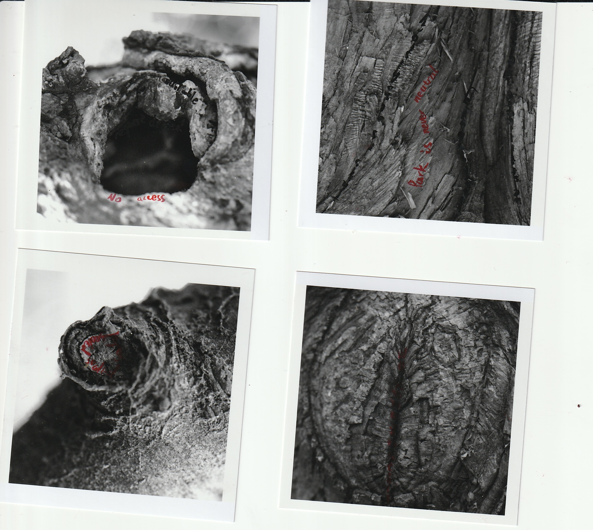
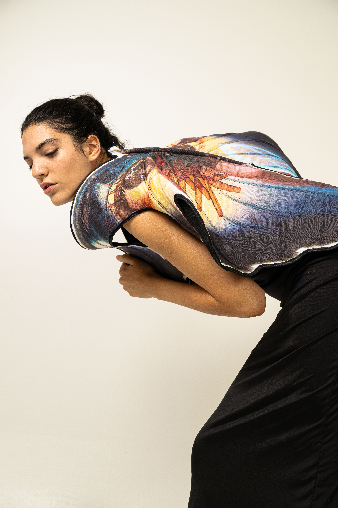
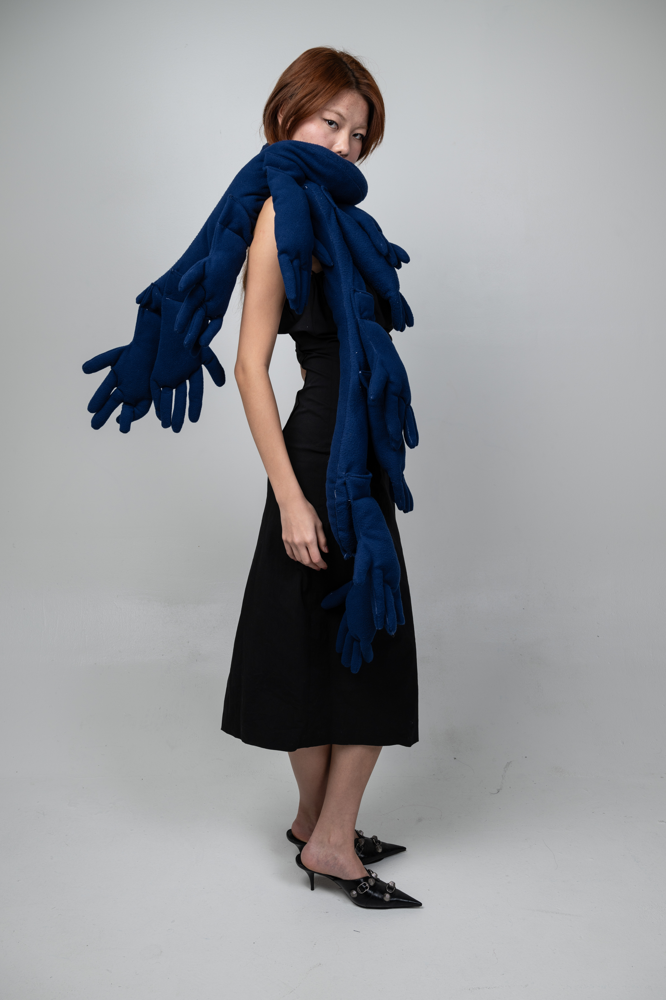
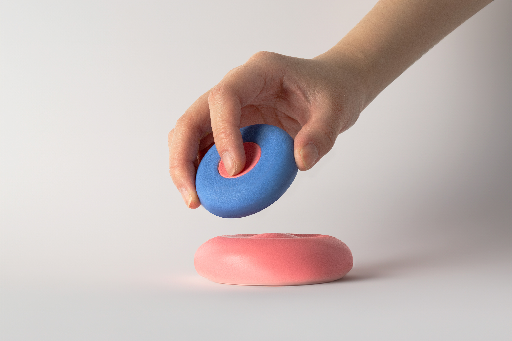

Works


What Remains Said / What Remains Seen is a video installation composed of two interdependent parts: image and sound. The visual component assembles found footage from archival documents, immigration records, news, and published research, forming a fragmented field of institutional evidence. The audio component presents a fictional narrative based on the true experience of an international student who was detained and deported, interwoven with contemporaneous news accounts. Through the tension between what is documented and what is voiced, the work addresses vulnerability and lasting trauma, examining how immigrant lives are rendered legible, erased, or displaced within bureaucratic and media systems during moments of political and social uncertainty.
Digital Decay explores digital information decay through three linked gestures. I translate selected art films about data loss into low-fidelity videos rendered only as alphanumeric characters. A soundscape begins as code read by text-to-speech, then collapses into abstract 8-bit noise. The generative script appears again as a printed object, intentionally unreadable.
The work treats digital preservation as provisional: data degrades, and meaning erodes, regardless of how permanent it appears.
Cereal documents a week-long ritual of preparing breakfast cereal with minimal variation. By recording this methodical daily act, the work isolates routine and lets its quiet absurdity surface. It asks what meaning we assign to repetition, and how habit shapes our sense of time in modern life.

The Duck captures a liminal space between belonging and alienation: a solitary rubber duck adrift before Manhattan’s skyline. The panorama shifts from day to night, but the duck remains suspended, small against the city yet visually distinct. Its out-of-place innocence turns the cityscape into a metaphor for foreignness and cultural displacement.
Before the fire, After the flame begins with an apartment fire that destroyed more than half of my film archive. After a year of distance, I return to what remains and treat the archive as material again. The installation juxtaposes intact and damaged images through parallel projections to examine the fragility of physical media and the limits of preservation.
The charred remnants introduce a different kind of texture and form, and the work asks how catastrophe can become a catalyst for reconsidering what an archive is, and what it means to keep what survives.





Trace is composed of two interdependent parts: photographs of City Hall Park’s trees and a bark artifact inscribed with protest slogans once voiced on the same ground. The work treats the tree as both witness and surface, where language can be carried, scarred, and re-read.
By rewriting slogans onto bark and presenting them beside the images, I trace how collective speech persists even when names disappear from official records. The piece asks what remains in public space after events pass, and how memory survives as material texture rather than clear narrative.
Writing
City Hall Park feels like a quiet public space now, trees, benches, commuters crossing diagonally to save time, but the ground feels heavy, as if memory sits just beneath the soil. The first line that stays with me is the idea that the land began as a commons, a shared resource rather than a governed territory. There’s something tender in that, the idea that the park once belonged to everyone, without permitting, without fencing or oversight. A public before policy.
But the narrative shifts quickly: punishment, execution, military display. The park becomes stage, not sanctuary. I think about how public violence makes power visible. How a state demonstrates authority by making the body a message. How communal land becomes a theater of obedience.
Before City Hall, there were prisons, almshouse, workhouse, debtor’s jail. The poor, the indebted, the unwanted: they lived, worked, suffered here. And yet their names are mostly missing. The archive is full of architectural plans, records of construction, government meetings, but the people who slept here, starved here, survived or died here, exist mostly as material traces. Objects found underground speak more loudly than written documents: ceramics, bones, nails, tobacco pipes. Trash becomes biography.
It feels significant that protest happens here before government does: the first political assembly against the Stamp Act. As if the land itself was predisposed to dissent. A commons remembers collective voice, even when the state tries to formalize it into marble and law.
The transformation into City Hall Park marks a shift, from messy, unpredictable public use to disciplined civic environment. The park becomes curated, controlled, aesthetic. Paths are drawn where wandering used to be. Law replaces grazing. A fence is built. But even now, the report says, earlier landscapes endure beneath the surface. The buried layers become a reminder: history doesn’t disappear; it settles.
What moves me most is the sentence that describes the site as a palimpsest. A document rewritten so many times that past text still bleeds through. A city is never singular; it is accumulation. I keep returning to one idea: public spaces always contain ghosts, not of the dead, but of the unrecorded. City Hall Park is not peaceful. It is layered. It is contested. It is memory disguised as grass.





Studio images from commissioned and self-initiated shoots.